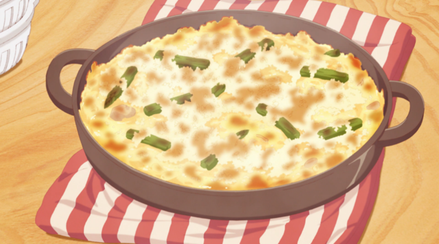

Home
Mac N Cheese

Mac N Cheese is also my favorite dish
Ingredients
1 lb. dried elbow pasta
1/2 cup unsalted butter
1/2 cup all purpose flour
1 1/2 cups whole milk
2 1/2 cups half and half
4 cups shredded medium sharp cheddar cheese divided (measured after shredding)
2 cups shredded Gruyere cheese divided (measured after shredding)
1/2 Tbsp. salt
1/2 tsp. black pepper
1/4 tsp. paprika
How to make Mac N Cheese Step-By-Step
If you’ve never made homemade mac and cheese before, it can seem a bit
daunting. But don’t worry, we’ll break it down and take it step by step!
- Boil the pasta, drain.
- Make the cheese sauce by combining a fat (butter), and starch (flour), then whisking in the milk products.
- Cook the sauce until it’s nice and thick.
- Add in shredded cheeses, stir well.
- Combine cheese sauce with cooked pasta.
- Transfer half of the mac and cheese to a baking dish, sprinkle with more shredded cheese.
- Top with the rest of the mac and cheese, top with more shredded cheese.
- Bake and prepare to thoroughly enjoy!